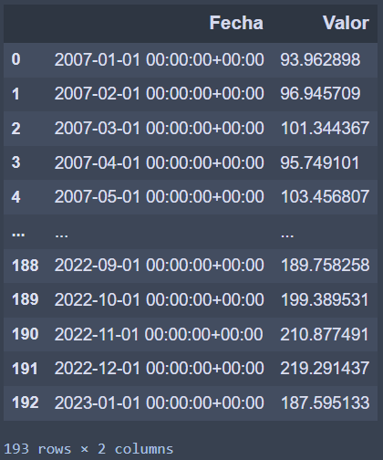
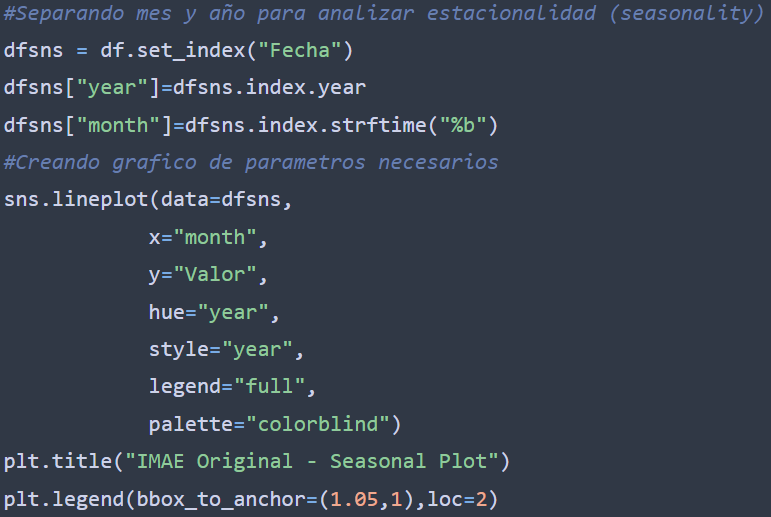

Método Clásico de Descomposición de Series Temporales
Una descomposición de serie temporal es un método estadístico utilizado para separar una serie
de tiempo en diferentes componentes con el objetivo facilitar el análisis de esta. En este resumen estaré desglosando mediante el Método Clásico de Descomposición de Series Temporales el Índice Mensual de Actividad Económica (IMAE) de la República Dominicana.
Al mismo tiempo estaré compartiendo el código de Python utilizado para generar cada una de las
etapas de este análisis. En mi caso la data se estará extrayendo directamente desde la base de
datos de Yunque Capital (firma en que colaboro actualmente), para mayor facilidad en cuanto al
filtrado y preparación de la data, no obstante, estaré cargando un archivo .csv en el repositorio con la misma data utilizada. Igual, la información cruda puede ser encontrada en el sitio web del Banco Central de la República Dominicana en la sección de Sector Monetario y Financiero. Empecemos extrayendo la data.
Código

Resultado
Este código conecta a la base de datos, crea un query, lo envía, almacena el resultado y se asegura de que la columna "Fecha" tenga el formato adecuado. Como resultado tenemos una serie temporal cuya columna "Valor" se corresponde al IMAE. Grafiquémosla.
Código
Resultado
Esta línea de código convierte la columna "Fecha" en índice y pasa la información directamente para ser graficada. Sin embargo, el comportamiento de esta variable podría analizarse mejor si descomponemos el comportamiento de forma anual. Veamos:
Código
Resultado

Este código crea un DataFrame con la columna "Fecha" como índice, agrega las columnas de año y mes y procede a generar el gráfico con los parámetros dados.Con este resultado podemos observar como a diferencia del 2020 (año del COVID-19) el comportamiento de la variable sigue un patrón similar año a año.
El Método Clásico de Descomposición de Series Temporales se puede modelar con los métodos
Aditivo y Multiplicativo. Para determinar qué modelo utilizar se suelen tomar en cuenta las
siguientes características
Aditivo
- 1- Utiliza un modelo aditivo que descompone la serie temporal en cuatro componentes: nivel, tendencia, estacionalidad y ruido. Esto significa que separamos la serie temporal en estas cuatro partes y las analizamos por separado.
- 2- Asume que los cambios en la variable a lo largo del tiempo son consistentes en tamaño. Esto significa que la serie temporal cambia de manera constante, lo que es importante para que el modelo aditivo funcione correctamente.
- 3- Asume que la tendencia de la serie temporal es lineal, es decir, que sigue una línea recta. Esto es importante porque la tendencia representa la dirección general del cambio en la serie temporal, y si la tendencia no es lineal, puede ser difícil de modelar.
- 4- Asume que la estacionalidad de la serie temporal es lineal, con la misma frecuencia y amplitud en cada ciclo. Esto significa que los patrones estacionales de la serie temporal tienen la misma duración y amplitud en cada ciclo, lo que facilita el modelado y la comprensión de la serie temporal.
Multiplicativo
- 1- La variabilidad de la serie aumenta o disminuye a medida que aumenta el nivel. Si la varianza de la serie temporal aumenta o disminuye a medida que aumenta el nivel, entonces puede ser apropiado utilizar un modelo multiplicativo. Un ejemplo de esto sería la inflación, donde la variabilidad de los precios aumenta a medida que aumenta el nivel de precios.
- 2- La amplitud de la estacionalidad varía con el tiempo. Si la amplitud de la estacionalidad varía con el tiempo, entonces puede ser apropiado utilizar un modelo multiplicativo. Un ejemplo de esto sería la venta de juguetes, donde la amplitud de la estacionalidad varía según la época del año.
- 3- La relación entre la media y la varianza de la serie es proporcional. Si la relación entre la media y la varianza de la serie es proporcional, entonces puede ser apropiado utilizar un modelo multiplicativo. Por ejemplo, en una serie de tiempo de producción, puede haber una relación proporcional entre la media y la varianza, donde una mayor producción conlleva una mayor variabilidad.
- 4- La serie temporal tiene una tendencia exponencial. Si la serie temporal tiene una tendencia exponencial, es decir, que el cambio a lo largo del tiempo es proporcional al nivel actual de la serie, entonces puede ser apropiado utilizar un modelo multiplicativo. Un ejemplo de esto sería la tasa de crecimiento de una población.
Para decidir qué metodología tomar, evaluemos el comportamiento del IMAE en conjunto con una media y una desviación estándar, ambas calculadas con una ventana móvil de 12 meses.
Código
Resultado
Obviando el comportamiento del COVID-19 podríamos determinar que la variable tiene un comportamiento que puede ser analizado con un modelo aditivo. Veamos los resultados
Código
Resultado

En este cuadro de descomposición podemos observar por separado cada uno de los componentes:
Tendencia
La cual presenta un comportamiento claramente al alza.
Estacionalidad
Mostrando como se comporta esta variable en cada período y permitiendo analizar donde se encuentra esta y cual sería su comportamiento esperado.
Aliatoriedad o Residuo
Con este podemos evaluar si la descomposición realizada por el modelo pudo arrojar un resultado coherente al evaluar si los mismos muestran o no algún patrón. De mostrar uno podríamos concluir que el modelo no pudo explicar correctamente la variable ya que estaría dando por valores aleatorios resultados que deberían agregar valor, de lo contrario (que a mi parecer es el caso), el residuo no muestra ningún patrón legible, concluyendo así que el resultado es acertado.
Con esto concluimos la descomposición de serie temporal bajo el método aditivo al IMAE. Si deseas utilizar este código abajo te comparto el link del repositorio donde podrás encontrar tanto el código de jupyter notebook como el utilizado para generar toda esta página web. No dudes en contactarme si tienes algún comentario, sugerencia o idea que quieras compartir.
https://github.com/hectordanielc/time-series